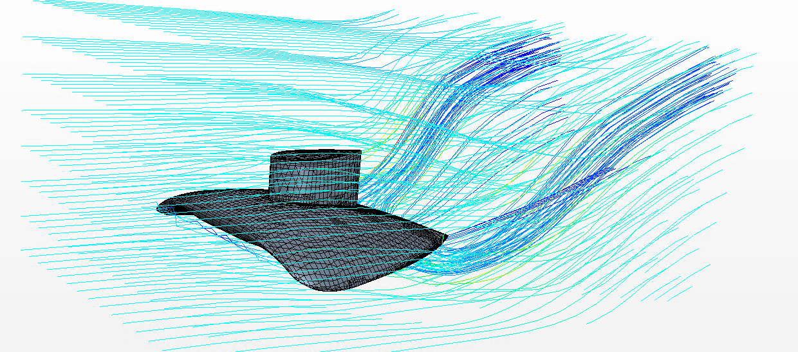
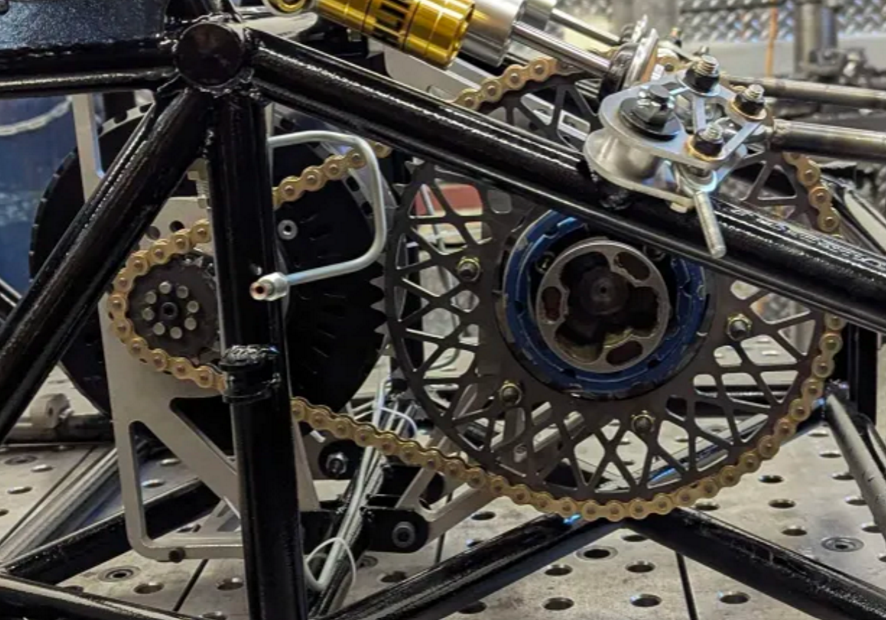

Beck Kesler
Mechanical Engineering
Mechanical engineering graduate student at Brigham Young University specializing in applied fluid mechanics. My work includes CFD, vehicle powertrain development, thermal analysis, and experimental research.
Engineering Projects

STOL Hoverfoil Research
CFD modeling and testing of hydrofoils with underwing air injection to investigate lift and drag performance.

BYU Formula E
Powertrain development and tractive battery engineering for BYU's Formula SAE electric race car.
Thermal Spectroscopy Research
Experimental research using high-powered lasers to investigate thermal diffusivity of materials.
About Me
I am a mechanical engineer interested in fluid mechanics, automotive engineering, simulation, and experimental testing.